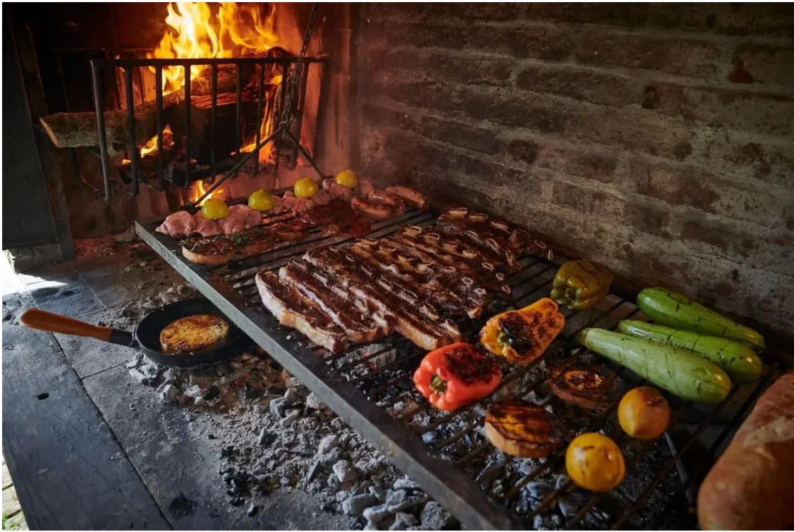

400 Years of Uruguayan Tradition
The Uruguayan asado
Why is asado one of the most consumed products in Uruguay? This tradition is part of Uruguay's identity, furthermore, the country boasts massive livestock production, with a cattle population that actually exceeds its human population. While consumption today is driven by tradition, the practice dates back over 400 years, when cattle were introduced because the land was perfect for raising them. This sparked a process where gauchos could rely on beef, making it the backbone of the local and national economy.
Origin of the meat
With the advent of cities and urbanization, "Meat Day" was established to preserve the importance of meat in the country. However, there is no specific "Asado Day" as such, though there are occasions closely linked to the dish. Generally, the gaucho tradition involves cooking meat with the hide on (carne con cuero) and holding tastings. Then there is May 1st Labor Day. Since this is a day spent with family, the Uruguayan social ritual often centers on the asado, even though these are simply occasions associated with the dish rather than a dedicated holiday for it.
Tradition and celebrations
With the advent of cities and urbanization, "Meat Day" was established to preserve the importance of meat in the country. However, there is no specific "Asado Day" as such, though there are occasions closely linked to the dish. Generally, the gaucho tradition involves cooking meat with the hide on (carne con cuero) and holding tastings. Then there is May 1st Labor Day. Since this is a day spent with family, the Uruguayan social ritual often centers on the asado, even though these are simply occasions associated with the dish rather than a dedicated holiday for it.
Differences in asado
Regarding cooking methods, the Argentine style of grilling asado is often confused with the Uruguayan one, yet small details make the difference. When using firewood, the meat acquires a smoky quality and a distinct flavor depending on the type of wood used, many Uruguayans prefer firewood, even though it requires more preparation time than charcoal. In contrast, Argentines prefer charcoal, largely because it is cheaper in Argentina, whereas firewood is more expensive. In terms of flavor, charcoal imparts a slightly more bitter taste to the meat, and the cooking process is faster.
Grill and cuts
Another difference lies in the grills themselves. In Uruguay, grills are made of round rods, allowing meat drippings to fall directly onto the embers. The grill's height is often adjustable to control the cooking temperature. An Argentine grill, however, features V shaped channels that prevent fat from dripping directly onto the charcoal, thereby avoiding flare-ups. Finally, what is typically served at a Uruguayan asado? The most common cuts are tira de asado (short ribs) and pamplona (stuffed chicken), while choto (grilled small intestines) appears on occasion.
A living tradition
The Uruguayan asado tradition differs in subtle ways, though it is frequently confused with the Argentine version due to the many similarities between the two cultures much like mate, alfajores, and the way we speak. These may be minor details, but they represent distinct customs passed down through generations; the same holds true for the Uruguayan asado.